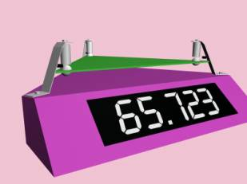
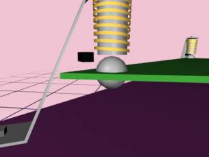

| HOME | PERSONAL | PROJECTS | LINKS |
 |
 |
||
Il principio di funzionamento con piatto a levitazione magnetica consente di realizzare uno strumento dalla sensibilità virtualmente illimitata.
Il piatto della bilancia è mantenuto orizzontale a quota costante da tre attuatori così composti: un’elettrocalamita verticale attira verso l’alto un bersaglio ferromagnetico (vedi sferetta in figura), un trasduttore ottico misura la quota di questo bersaglio un controllore si preoccupa di mantenere il bersaglio a distanza costante.
Secondo il peso applicato al piattino, le elettrocalamite compieranno uno sforzo proporzionale al peso da sollevare, è allora sufficiente misurare la corrente che alimenta le bobine per avere una misura del peso.
Un dispositivo a microprocessore farà la somma delle tre correnti per ottenere il peso totale.
Il microprocessore fornisce un segnale di riferimento per gestire la quota del piatto. Una routine sarà in grado di variare la quota in modo da adattarsi al meglio al peso da misurare. L’elettrocalamita ha una relazione forza-distanza (a parità di corrente) fortemente decrescente con l’aumentare della distanza; è conveniente allora utilizzare distanze piccole per pesi grandi e distanze maggiori per pesi più piccoli. Grazie a questa caratteristica si può fare in modo di regolare la distanza affinché si massimizzi la sensibilità dello strumento.
Per aumentare la precisione della misura a discapito del tempo di elaborazione è possibile inserire un altro tipo di controllo. Con una semplice retroazione negativa sulla quota del bersaglio si fa in modo che questo oscilli con costante di tempo proporzionale alla massa. Un frequenzimetro potrà così misurare la massa.
Un aspetto molto delicato è senz’altro il progetto delle elettrocalamite e dei bersagli ferromagnetici.
La prima esigenza che si richiede è che una configurazione stabile presenti il bersaglio centrato sull’asse dell’elettrocalamita. La sagomatura e le dimensioni di bersaglio ed elettrocalamita, sono i parametri che influiscono sulla stabilità della posizione desiderata. Un primo studio può utilizzare tecniche numeriche per determinare l’energia potenziale del sistema. Sarebbe appropriato lavorare con diversi tipi di software dedicati al problema di sintesi di campo magnetico; tuttavia un approccio più ingegneristico definisce già alcuni parametri di progetto essenziali. L’ingombro, la potenza sviluppata, l’immunità ad interferenze, la simmetria assiale degli attuatori sono già dei vincoli stringenti che suggeriscono un piccolo numero di soluzioni praticabili. Se il modello è abbastanza semplice si può analizzare il potenziale U(r), con il bersaglio a quota costante e r scostamento assiale.
Altre soluzioni possono complicare la struttura dell’elettrocalamita fino a scomporla in più espansioni polari (vedi figura). Dato che il controllore deve stabilizzare la quota del piatto, sarebbe sgradevole osservare piccole rotazioni del piatto e sicuramente difficile controllarle (visto che una specifica di progetto prevede attriti limitati a quelli con l’aria).
Il microprocessore è in grado di calcolare la posizione del baricentro del sistema tenuto in sospensione. Non sarà difficile programmare una funzione dimostrativa che controlli la traiettoria di una pallina lasciata sul piatto. Questa funzione è resa possibile in quanto la quota di riferimento dei tre bersagli è una quantità gestita dal microprocessore; in questo modo il piatto può essere messo in movimento senza problemi.
| HOME | PERSONAL | PROJECTS | LINKS |